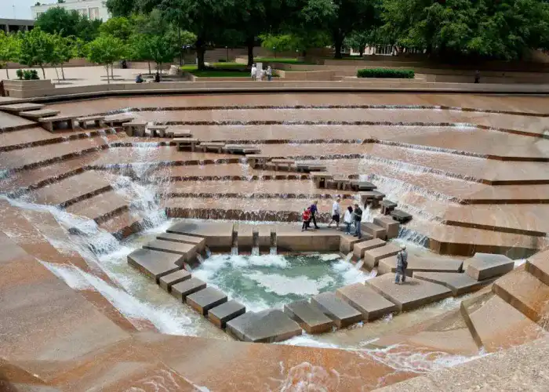

Ses réalisations dans le temps

1949

Glass House (New Canaan,Connecticut, 1949)
1953

MoMA Sculpture Garden (New York, 1953)
1958

Seagram Building (New York, 1958)
1974
Fort Worth Water Gardens (Fort Worth, Texas 1974)
1984

AT&T Building (New York, 1984)
1984

PPG Place (Pittsburgh, Pennsylvanie, 1984)
1986
Lipstick Building (New York,1986)
2004

MoMA Expension (New York, 2004)